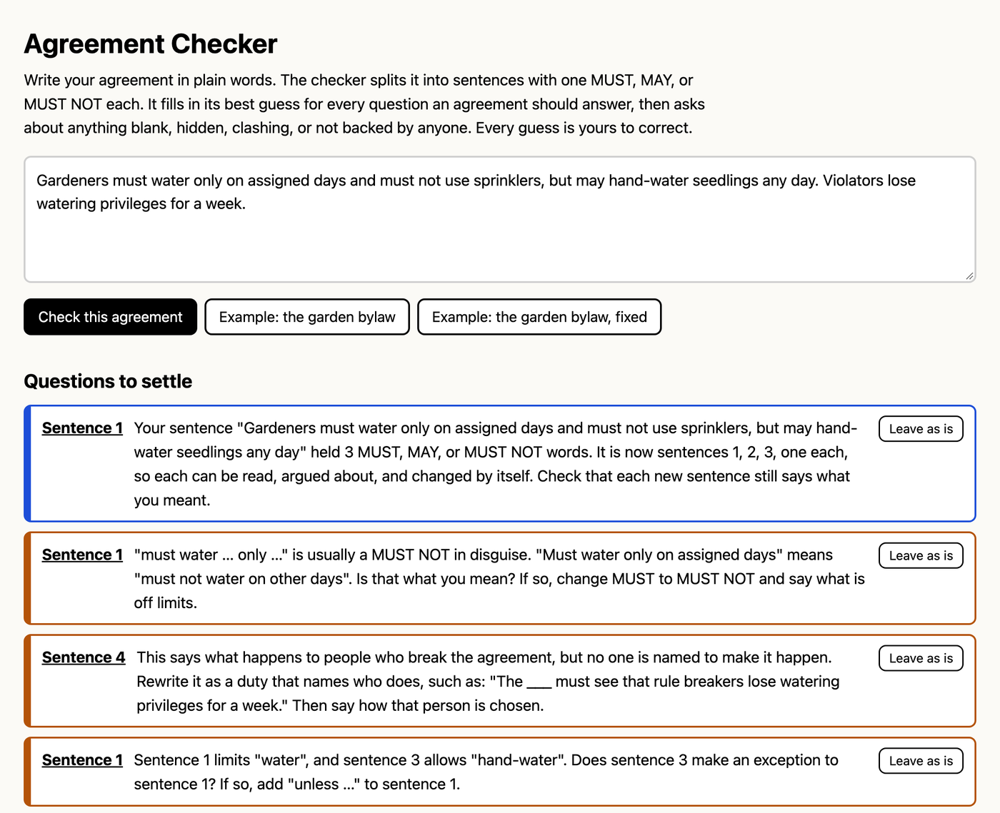
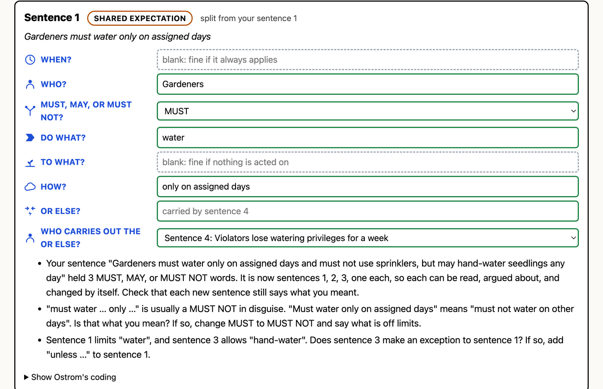
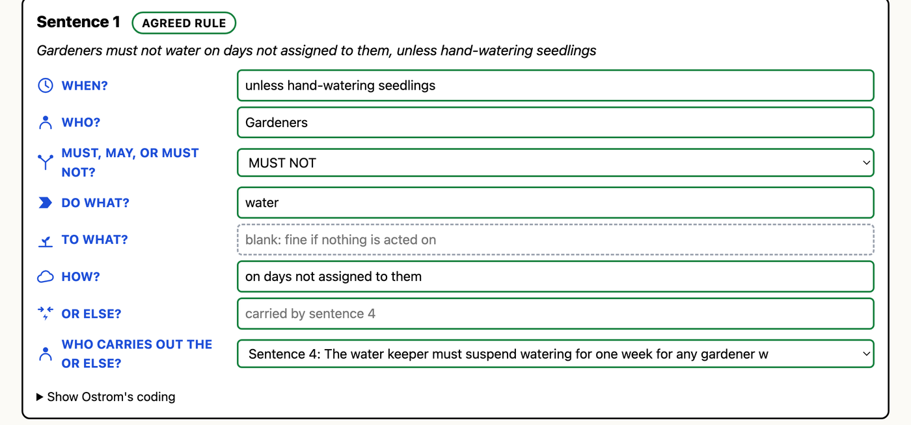
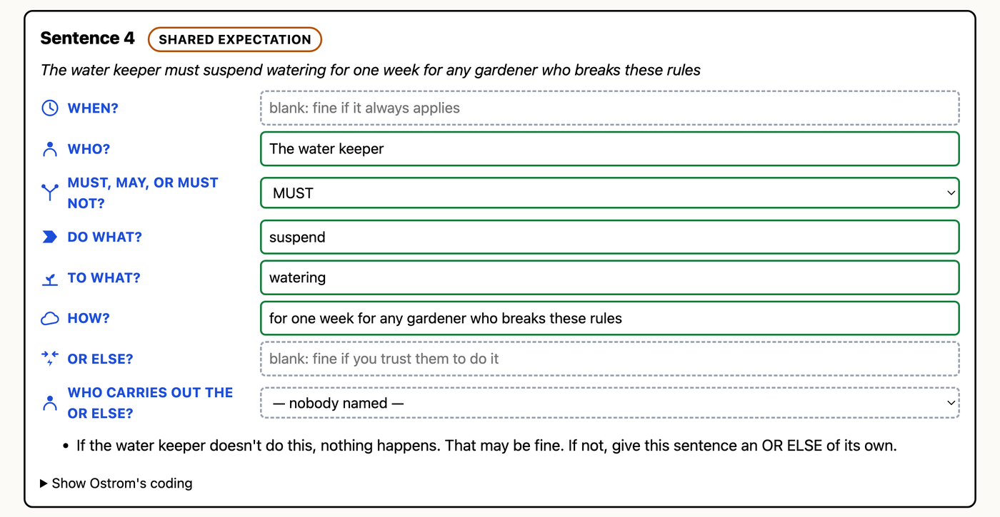
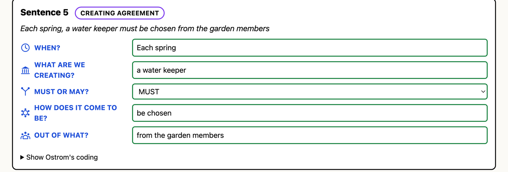
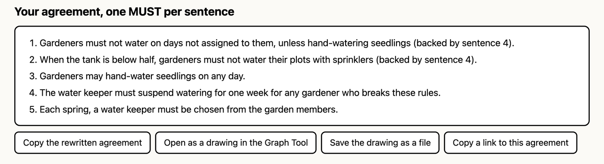
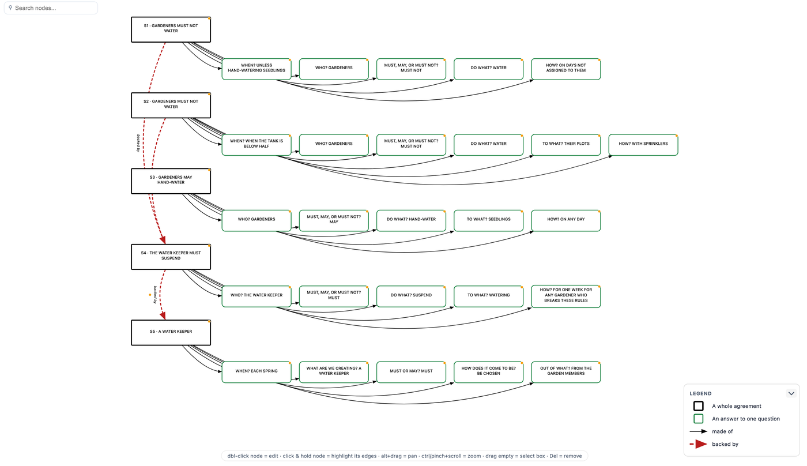

How to check an agreement, sentence by sentence, and what every part of the screen means.
Open agreement-checker.html in any web browser. There is nothing to install and no account. It works without an internet connection. Keep the file rcn-icons.js in the same folder; without it the questions lose their pictures but everything else still works.
The first time you open it, the garden bylaw example is already loaded, so you can see the checker at work before typing anything.
Type or paste your agreement into the big box at the top, then press Check this agreement.
Pressing Check this agreement again starts over from the text in the box. Changes you made in the sentence cards below are replaced by fresh guesses.

This list is the heart of the checker. Each item names a sentence and asks one question in plain words.
When every question is settled, the list says so and invites the group to read the rewritten agreement out loud together.

Every sentence gets a card. At the top: its number, its label (see section 8), and whether it was split from one of your sentences. Below that, your sentence in italics, and then one box per question holding the checker's best guess.
| Box looks like | It means |
|---|---|
| Green | Answered. |
| Yellow, dashed | Needs an answer. Nobody has given one yet. |
| Grey, dashed | Optional. Leave it blank if it doesn't apply. The grey hint inside says when blank is fine. |
Every box can be changed. The checker's guesses come from word patterns, and they will sometimes be wrong. Type over any guess. The questions at the top, the label, and the rewritten agreement all update as you type.

| Question | What to put there | Needed? |
|---|---|---|
| WHEN? | What switches this on: "when the tank is below half", "after paying dues". Exceptions go here too: "unless hand-watering seedlings". | Optional |
| WHO? | The people or the role: "gardeners", "the treasurer". Avoid "they". | Yes |
| MUST, MAY, OR MUST NOT? | Pick one. If a sentence needs two, it is two sentences. | Yes |
| DO WHAT? | The action: "water", "pay", "report". | Yes |
| TO WHAT? | The thing acted on: "their plots", "dues". | Optional |
| HOW? | Limits on how, where, how much, or by when: "with sprinklers", "by March 1". | Optional |
| OR ELSE? | What happens if it is broken. Needed for a MUST or MUST NOT to be an agreed rule. A permission has none, because a permission can't be broken. | For MUST and MUST NOT |
WHEN? and HOW? together are what Ostrom called Conditions. WHEN? is the trigger; HOW? is the limit.
An OR ELSE only counts if someone is named to carry it out. The last row of each card, WHO CARRIES OUT THE OR ELSE?, links this sentence to the sentence that names that person.
The checker fills this in when it finds a sentence about rule breakers, such as "The water keeper must suspend watering for one week for any gardener who breaks these rules." It links that sentence to every MUST and MUST NOT sentence before it. If it guesses wrong, pick the right sentence from the list, or pick nobody named.

The sentence that carries out a consequence is itself a duty, and it can have its own OR ELSE. Usually it doesn't: at some point a group trusts someone. The checker points this out once, as a note, and lets it be.

When a sentence sets something up (a role, a council, a membership) the checker recognises words like "be chosen", "be elected", "consists of", or "there shall be", and asks different questions:
The checker uses these to answer one more question: when a rule names someone to carry out a consequence, does any sentence create that role? If not, it asks for one.
| Label | When the checker uses it |
|---|---|
| AGREED RULE | MUST or MUST NOT, backed by a sentence that names who carries out the consequence. |
| SHARED EXPECTATION | MUST, MAY, or MUST NOT, with nothing named to back it. Every permission is one. |
| SHARED HABIT | No MUST, MAY, or MUST NOT: a description of what people do. |
| CREATING AGREEMENT | Sets up a role, group, or thing. |
| LOOSE CONSEQUENCE | A penalty sentence with no one named to carry it out, like "Violators lose watering for a week." Turn it into a duty that names someone. |
| When it asks | What to do |
|---|---|
| A sentence held more than one MUST, MAY, or MUST NOT | It has already split them. Check each new sentence still says what you meant. |
| "must … only …" | Usually a MUST NOT in disguise. Change MUST to MUST NOT and say what is off limits, or Leave as is. |
| One sentence limits an action another allows | If one is an exception, add "unless …" to WHEN? on the limiting sentence. |
| A penalty with no one named | Rewrite it as a duty: "The ___ must see that rule breakers …". Then say how that person is chosen. |
| There is no OR ELSE | Add an agreed consequence, or leave it as a shared expectation on purpose. |
| The OR ELSE says what happens, but not who makes it happen | Add a sentence naming who, and link it in WHO CARRIES OUT THE OR ELSE?. |
| A permission with an OR ELSE | A permission can't be broken. Remove the OR ELSE, or change MAY to MUST or MUST NOT. |
| Nothing says who the enforcer is or how they are chosen | Add a creating agreement for the role. |
| If the enforcer doesn't do this, nothing happens | A note. Fine to leave; or give the duty an OR ELSE of its own. |
| No MUST, MAY, or MUST NOT | A note: it reads as a shared habit. Add one if people are expected to do it. |
| "should" | Softer than MUST. Decide which you mean. |
| Who does this apply to? / "They": who exactly? | Name the people or the role. |
| Says what must be done but not who must do it | "Fees must be paid" needs a WHO: "Members must pay fees". |
| What is the action? | Fill in DO WHAT?. |
| A word people read differently ("promptly", "reasonable", "as needed" …) | Say how much, how often, or by when. |
| Creating agreement missing a part | Fill in what is created, how it comes to be, or what it is made from. |

At the bottom, the checker rebuilds your agreement from the answers in the boxes, one sentence per rule. Where a sentence is backed by another, it says so: "(backed by sentence 4)". This is the text to read aloud to the group before anyone agrees to it. Copy the rewritten agreement puts it on your clipboard.

Open as a drawing in the Graph Tool opens the agreement in the RCN Graph Tool, which must sit in the same folder. Each sentence is a black box; its answers sit in a row to its right. An answer that is still needed is drawn in yellow. Red dashed arrows show what backs what: a rule to the duty that enforces it, and that duty to the agreement that creates the role. Hover over any box to read the full sentence.
Save the drawing as a file saves the same drawing as agreement.rcn.json, which you can import into the Graph Tool later or send to someone.
Under each card, Show Ostrom's coding opens the same sentence in the terms of Ostrom's Institutional Grammar (IG 2.0), for researchers and anyone who wants to check the translation.
| Plain question | IG 2.0 component |
|---|---|
| WHEN? | Activation Condition (Cac) |
| WHO? | Attributes (A) |
| MUST, MAY, OR MUST NOT? | Deontic (D) |
| DO WHAT? | Aim (I) |
| TO WHAT? | Object (B) |
| HOW? | Execution Constraint (Cex) |
| OR ELSE? | Or else (O); a linked sentence is a nested statement |
| WHAT ARE WE CREATING? | Constituted Entity (E) |
| MUST OR MAY? (creating) | Modal (M) |
| HOW DOES IT COME TO BE? | Constitutive Function (F) |
| OUT OF WHAT? | Constituting Properties (P) |
The labels map too: an agreed rule is Ostrom's rule, a shared expectation is a norm, and a shared habit is a shared strategy. The drawing carries the same terms in each box's properties.